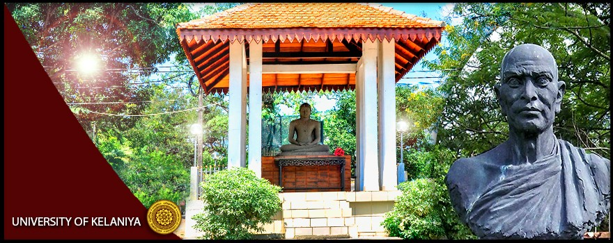

Environment & Development Consultants (EDCON)
ENVIRONMENT & DEVELOPMENT CONSULTANTS (EDCON),
UNIVERSITY OF KELANIYA
(UNIVERSITY-INDUSTRY-COMMUNITY INTERACTION CELL)
In order to extend the knowledge and skills of the academia to the industry and the
community, a “University-Industry-Community Interaction Cell”, named as“ENVIRONMENT & DEVELOPMENT
CONSULTANTS (EDCON), UNIVERSITY OF KELANIYA” has been established in the Faculty of Science, University
of Kelaniya with assistance from the University Grant Commission.
Services expected to be delivered through the unit
The expertise available at the academic departments of the Faculty of Science will be utilized to
provide services to the industry and community especially in the following fields on the basis of
potential initiatives under each academic department.
- Delivery of short courses on the following spheres of expertise
- Tissue culture
- Horticultural aspects and landscaping
- Post-harvest methods for fruit exportation
- Propagation of aquatic plants for exportation
- Organic farming
- Environmental management and Environmental impact assessment methods
- Workshops, certificate courses, training seminars, short term training programmes in Analytical Chemistry, Environmental Chemistry, Pest Management, Food Chemistry & Biochemistry, Polymer Chemistry, Mineral Chemistry, Biochemistry & Molecular Biology, Horticulture
- Seminars, practical sessions, TV programmes in various science disciplines of GCE Advance level programmes (for teachers and students)
- Certificate and diploma courses in Mathematics, computer programming, computer networking, computer architecture, databases, internet & email, statistical software and office packages for school leavers and employees in the private and public sectors
- Conducting training programmes in environmental conservation, environmental management, better practice approaches in aquaculture, etc.
- Conducting practical workshops on shrimp health, water quality and feed management in shrimp farming industry
- Conducting training programme, seminars and discussions on sustainable shrimp farming
- Conducting training programmes on disease diagnosis, prevention and treatment in the freshwater ornamental fish farming industry
- Offering a certificate course in Ornamental Fish Farming
- Short courses on forecasting and monitoring dengue epidemic in high risk areas
- Offering a certificate course on ecotourism
- Short courses in Physics and Electronics specially designed to general public
- Conducting workshops (two to three full days) on “Nine ways of working” (train–the–trainers based on Enneagram) for the management-level staff in the private sector.
- Technical services
- Fungal identification
- Higher plant identification
- Preparation of environmental impact assessment (EIA) statements for development activities
- Testing physico-chemical parameters of water
- Testing for microbiological quality of water (potable and non-potable water) for Fecal and non-fecal coliforms, Pseudomonas, etc.
- Providing expert services on the issues related to aquatic ecotoxicology and biomonitoring aspects
- Organizing eco-tours
- Analytical testing services for chemical products
- Manufacture and repair of scientific, industrial and ornamental glassware (Orders for the manufacture and repair of laboratory glassware and manufacture of ornamental glassware such as gift souvenirs, glass toys and decorations are undertaken by this unit. Special concessionary rates are given for schools)
- Testing food & beverages, dairy, cosmetics and pharmaceutical products, aurvedhic products, and bio-fertilizers, organic fertilizers (composted materials) for microbiological quality standards, according to the international and national requirements
- Detection of food pathogens Salmonella, Vibrio cholera, Vibrio parahaemolyticus, Bacillus spp. E. coli, Camphylobacter jejuni using PCR techniques and other biochemical methods
- Detection of genetically modified organisms (GMO) and genetically modified (GM) products using PCR techniques
- Detection & Identification of plant pathogens, virus & bacteria ELISA techniques
- Detection of contaminant microorganisms in Pharmaceuticals and Cosmetics
- Repairing and renovating selected electric and electronic items including equipment, instruments, devices, and other various utensils
- Services to improve efficiency and minimize cost and wastage in production and trade.
- Workshops
- Techniques for fungal identification and maintenance of live cultures
- Traditional methods of using plants for manufacturing handicrafts/ utensils
- Horticultural plant propagation
- Plant breeding
- Training of technical personnel in chemical and microbiological laboratories of industries, research institutes on quality control aspects on food & beverages, potable water, dairy, cosmetics, bio-fertilizers, pharmaceuticals etc
- Training on microbial culture preservation techniques, cryopreservation and freeze drying, identification and characterization of microorganisms (e.g. Salmonella spp., Bacillus spp. etc.)
- Training on detection of GMO and GM products.
- Training on computer networks, software development, e-learning, database design and statistical analysis.
- Interpersonal skill development
- Advisory services
- Handling and post-harvest disease control of fruits and vegetables
- Mangrove propagation and maintenance of nurseries
- Consultancies to public and private sector in mathematical problems related to Industry such as minimizing production costs, improving efficiency and reducing wastage, etc.
- Developing curricula for undergraduate and postgraduate courses, and for public and private sector institutes
- GMO and GM products testing techniques, equipment and materials
- Advisory services to public and private sectors on GMO and GM product testing under the National Biosafety Framework
- Serving as an Advisory body for microbial formulations used in composting and in waste treatment
- Consultancy services on special tasks such as investigation of microbial deterioration and contaminations of frescoes and paintings of archeological value
- Advisory services on the identification of microorganisms (specially bacteria and fungi)
- Providing facilities to serve as a reference laboratory for the identification of microorganisms, and supplying reference microbial cultures for industrial research institute and universities laboratories
- Water and soil quality testing for selection of suitable sites for aquaculture
- Providing services of disease diagnosis and treatment in cultured aquatic organisms
- Conducting short-term training programmes on disease diagnosis, prevention and treatment in the freshwater ornamental fish farming for hobbyists and self-employed persons
- Conducting awareness programmes for rural communities on rural aquaculture, management of small-scale fisheries, and participatory approaches in rural development
- Tackling problems related to plant parasitic nematodes in the agriculture sector
- Providing services to rural agriculture sector and ornamental plant industry on the management and control of plant nematodes and insect pests
- Consultancies to public and private sector in computer networks, e-learning, software development, database design, object-oriented technologies, statistical analysis, operational research & application.
- Collaborative research in the following fields
- Improvement of shelf-life and post-harvest quality of fruits and vegetables
- Development of phytoremediation methods for industrial effluent treatment
- Supervision of postgraduate students on problem-solving projects in the Industry
- Short term research projects to solve identified problems in agriculture and aquaculture
- Research projects to provide remedial measures for problems of scientific nature in local industries.
For services please contact
Dean Office,
Faculty of Science,
University of Kelaniya
Kelaniya, SRI LANKA.
Tel: +94 11 2911916
Fax: +94 11 2903203
© 2018 Information & Communication Technology Centre (ICTC), University of Kelaniya, Sri Lanka. All rights reserved
Created by KATHIRKAMATHAMBY.T